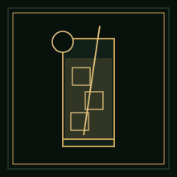
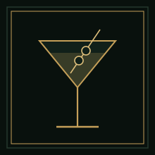

Highball pohár
Magas, keskeny pohár, általában 250 és 350 ml közötti űrtartalommal. Sok jég és üdítő vagy szóda fér bele, ezért tovább marad szénsavas benne az ital.
Példák: Mojito, Gin Tonic, Cuba Libre
Koktélreceptek és otthoni kereső
Nem mindegy, milyen pohárba kerül egy koktél, mert az alakja és a vastagsága is számít a jég és a szénsav miatt.

Magas, keskeny pohár, általában 250 és 350 ml közötti űrtartalommal. Sok jég és üdítő vagy szóda fér bele, ezért tovább marad szénsavas benne az ital.
Példák: Mojito, Gin Tonic, Cuba Libre

Alacsony, vastag falú és szélesebb pohár, nagyjából 200 és 300 ml közötti méretben. Azokat az italokat töltik bele, amiket egy nagy jégkockával és kevés keverővel fogyasztanak.
Példák: Old Fashioned, Negroni, Whiskey Sour

Kúpos, hosszú szárú, körülbelül 150 és 200 ml közötti pohár. A száránál fogva nem melegítjük fel a kezünkkel a jég nélkül felszolgált italt.
Példák: Dry Martini, Cosmopolitan, Manhattan

Kerekebb, talpas pohár, nagyjából 160 és 200 ml közötti méretben. Főleg jéggel összerázott, majd leszűrt koktélokhoz használják, mert kényelmesebb belőle inni, mint a Martini pohárból.
Példák: Daiquiri, Margarita, Sidecar